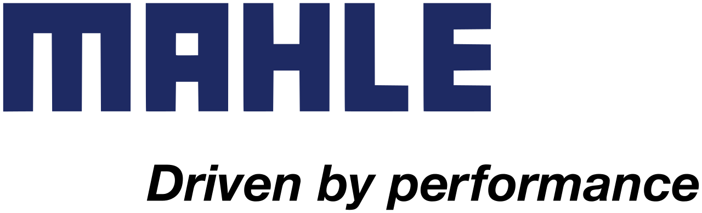

Work Experience 2
Sales & Application Engineer at MAHLE

Overview:
I got the opportunity to work as a Sales & Application Engineer at MAHLE Engine Components India in April 2016. This was my first
full-time role after my bachelor's degree. I was based out of Pithampur plant in Madhya Pradesh, India. It was a
techno-commercial job where I worked on new & running projects with 25 automotive companies worldwide and applied my engineering
skills to understand how things work for application engineering part.
MAHLE group ranks among the top three system suppliers worldwide with 140 production locations on 5 continents. It has 5
different business units and 7 different profit centers. Some of the business units include:
- Engine Systems and Components
- Filteration and Engine Peripherals
- Thermal Management
- Industry
- Aftermarket
MECI Pithampur is the largest producer of engine components and valve tappets in India with over 50% of market share. They
supply camshafts and valve tappets to all the major OEMs. MAHLE has two manufacturing facilities in Pithampur.
I was fortunate to work and manage both the manufacturing sites. One is the foundry
which is equipped with the advanced Green Sand & Shell Sand. It is used to produce high volume cast engine components.
And the other one is for machining, where all the VMCs and HMCs are used for machining the cast components.
I got exposure to all types of processes related to manufacturing, quality, production planning, sales, budgeting, etc which
was very helpful to understand the working environment at MAHLE. Being an engineer, I was involved in numerous projects
and took part as a cross functional team member with different departments to contribute to the company to develop and deliver high
quality products.
Roles & Responsibilities:
- Understood the complete foundry and machining processes along with inspection and measurement techniques.
Learned in detail about the green sand, shell sand, ADCOLE, 3CMM, roundness and surface finish tester, spectrometer, etc
- Conducted a thorough study about different types of materials like the chill cast, ductile iron, etc with shot blasting, crack testing
along with heat treatment processes like Nitriding, Phosphating, Induction Hardening, Tempering & Stress Relieving.
- Studied microstructure and metallurgy for case hardening, case depth, particle count, grinding burns with 32 channel spectrometer.
- Led cross-functional team for casting and machining feasibility, part costing, interpreting engineering drawings and revisions with GD&T.
to meet customer's engineering and quality requirements.
- Achieved project milestones by managing 20 auto companies with over 60 projects for New Product Development.
- Took lead for process modifications to resolve casting and machining problems on manufacturing lines on behalf of customers.
- Worked on PPAP, FMEAs, ISO/TS Audits, APQP, DVP&R, product metallurgical testing to meet specifications.
- Provided technical and purchase support for prototyping, tooling and fixtures, pre and series production with quality challenges.
- Responsible for weekly reporting, monthly scheduling and three months forecasting with the sales team.
- Conducted detailed market study including automotive news watch, vehicle production (ACMA/ SIAM), market share, competitor watch and new launches to
increase the company's sales, planning and production capabilities.
- Acquainted customers with MAHLE facilities and technologies by giving presentations and plant tours.
- Coordinated in schedule and supply monitoring, logistics, eCommerce and Incoterms for the supply chain management.